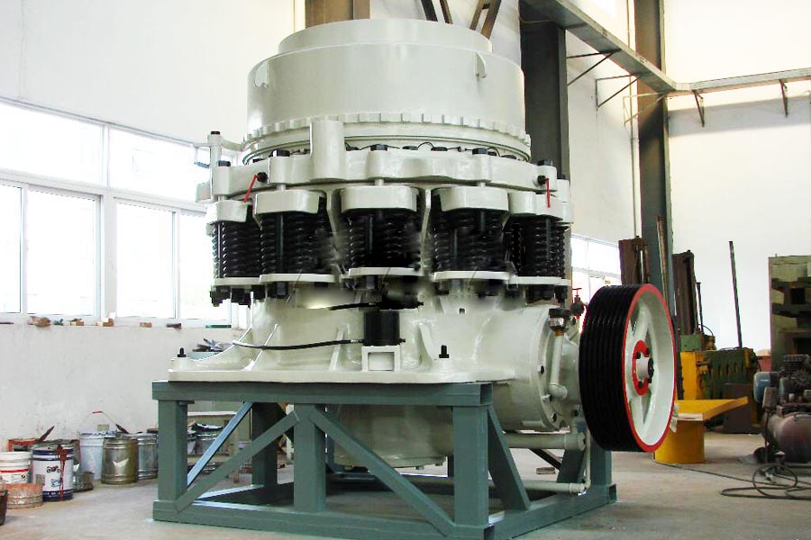

Construction waste crushing production line

Mobile construction waste crushing station for urban construction waste crushing.
gold ore crusher mill
gold ore crusher mill. Ore crusher, iron ore crusher, gold ore crusher, copper ore crusher, molybdenum ore crushing, ore crusher can be used for iron ore, granite, shale, stone crushing, secondary and tertiary crushing, so also called iron ore crusher, granite crusher and shale crusher.
Gold ore crusher, gold crusher, milling machine prices, gold ore processing equipment manufacturers, gold processing production line includes: crushing, grinding, beneficiation three processes. Mainly in gold ore processing equipment used in the process of gold ore crusher, gold ore mill, gold mine crusher and so on.
Gold mining machine has an important role in gold mining industry. CAG is a professional gold mining machine manufacturer of gold ore cursher ore gold mining crusher and gold mill machines. In gold mining, high technology gold mining equipment, such as gold detectors, elegant modern dredges, and lightweight sluices will be needed.
Gold crusher is also used as the primary crusher for crushing gold ore in gold ore crushing industry. Jaw crusher is the most used gold mining machine for crushing ore. Jaw crusher can reach the crushing ratio of 4-6 and the shape of final product is even. So gold jaw curshers are widely applied to crush high hardness, mid hardness and soft rocks and ores such as slags, construction materials, marble, etc.

Introduction to Gold Mining
Ghana gold ore crusher price. To separate the gold from the ore collected by the diggers in the mine tunnel, the ore was first crushed by a series of hammers in the stamper head. The crushed ore was then run over copper plates that had been treated with cyanide and then tinned with "quick-silver" (mercury). Mercury has a chemical affinity to gold and hence catches it. The resulting mixture was then heated to evaporate the mercury until only the gold remained. This method of extraction was used for many years although it was generally accepted that it was only 60% effective.
Gold ore crusher, gold ore production process, gold ore crusher, CAG is the first mining crushing solutions provider, focused gold ore processing three decades, to provide you with a full range of gold ore crushing processing equipment, and to provide you with comprehensive technical support.
Gold Mining Applications
Gold-Ore is an international mining and exploration company with one operating gold mine and several gold and base metal exploration properties at various stages of development. The Bjorkdal Gold Mine and the company's exploration properties are all located in the safe, highly developed and mining friendly jurisdiction of Sweden. Bjorkdal, is currently producing gold from both underground and open-pit operations at an annualized rate approaching 40,000 oz/year. The company is currently focused on expanding the resource base at the mine through development drilling, while also searching for new deposits on highly prospective ground surrounding the minesite. The physical assets of the company are complemented by an experienced operations team at the Bjorkdal Mine and an experienced management team, located in Vancouver, Canada.
Gold mining mahcine
Gold mining machine has an important role in gold mining industry.xsm is a professional gold mining machine manufacturer of gold ore cursher ore gold mining crusher and gold mill machines. In gold mining, high technology gold mining equipment, such as gold detectors, elegant modern dredges, and lightweight sluices will be needed.
Gold crusher is also used as the primary crusher for crushing gold ore in gold ore crushing industry. Jaw crusher is the most used gold mining machine for crushing ore. Jaw crusher can reach the crushing ratio of 4-6 and the shape of final product is even. So gold jaw curshers are widely applied to crush high hardness, mid hardness and soft rocks and ores such as slags, construction materials, marble, etc.
Gold ore processing equipment, gold ore crusher, gold ore processing equipment, gold ore beneficiation process, gold ore jaw crusher for large complex pendulum, is the successful experience of the company set similar products for the mining, smelting, building material, highway , railways, water conservancy projects, quarries and road construction and other industrial sectors specially designed rock crusher.
gold ore crusher mill. What can crusher equipment crushing gold ore? More crushing gold ore crusher equipment that can be selected, depending on the feed size, the finished product requires a reasonable choice crushing equipment, iron ore crusher is a kind of iron ore by- stage crushing.
Leave Me A Message, Now
If you have any questions regarding equipment prices, production line configuration or other problems, you can send a message to us, we will contact you soon.